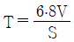
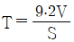
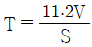
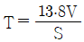
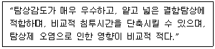
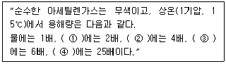

누설비파괴검사기사(구) (2008-05-11 기출문제)
1과목: 누설시험원리
1. 다음 중 침투탐상제에 의한 누설시험의 절차를 옳게 나타낸 것은?
- 전처리 → 강압 → 침투처리 → 후처리 → 관찰
- 전처리 → 침투처리 → 현상처리 → 관찰 → 후처리
- 전처리 → 침투처리 → 가압 → 관찰 → 후처리
- 전처리 → 침투처리 → 관찰 → 후처리 → 현상처리
(정답률: 알수없음)

2. 대형 시스템의 압력변화시험에서 기계적인 배기 시간은 Guthric 방정식으로 구할 수 있다. 이 공식을 이용하여 어떤 시험계의 압력을 10Pa로 감압하는데 걸리는 시간을 식으로 옳게 나타낸 것은? (단, T는 감압시간, S는 펌핑속도, V는 계의 부피이고, 10Pa의 진공압력을 얻기 위한 배수인자는 4이다.)




(정답률: 알수없음)
3. 어떤 계(system)의 초기 온도와 압력이 60℃, 80psia이며, 나중 온도가 86℃가 될 때, 계의 부피 변화가 없다면 계의 압력(psia)은 약 얼마인가?
- 67
- 86
- 95
- 115
(정답률: 알수없음)
4. 압력변화(pressure change) 누설시험에서 압력매체로 공기와 함께 가장 많이 사용되는 기체는?
- 아르곤
- 수소
- 산소
- 질소
(정답률: 알수없음)
5. 헬륨질량분석 누설시험에서 허위누설신호가 발생하는 원인과 가장 거리가 먼 것은?
- 시험시간 증가
- 대기 중 헬륨농도 증가
- 수소와 탄화수소의 오염
- 분석기 튜브 내에서의 이온 산란
(정답률: 알수없음)
6. 다음 중 할로겐 누설시험 방법이 아닌 것은?
- 스니퍼법 (직접주사 - 대기 중 할로겐 오염 무시)
- 프로브법 (직접주사 - 대기 중 할로겐 오염 고려)
- 쉬러드법 (Shuoud test)
- 적분법 (Accumulation test)
(정답률: 알수없음)
7. 다음 중 방사선투과시험에서 X선 필름의 감도를 높이고 노출시간을 단축시키며, 상질을 개선하기 위해 사용되는 것은?
- 계조계
- 투과도계
- 중감지
- 필름관찰기
(정답률: 알수없음)
8. 다음 중 침투탐상시험과 비교하여 자분탐상시험의 장점에 해당하는 것은?
- 절연체인 재료도 탐상할 수 있다.
- 비철금속 재료도 탐상할 수 있다.
- 페인트 처리된 강재료도 탐상할 수 있다.
- 표면이 복잡한 형상의 시험체를 쉽게 탐상할 수 있다.
(정답률: 알수없음)
9. 와전류탐상시험에서 시험코일의 임피던스에 영향을 미치는 인자와 가장 거리가 먼 것은?
- 시험체의 전도도
- 시험 속도
- 시험주파수
- 코일의 자체 인덕턴스
(정답률: 알수없음)
10. 비파괴검사 중 육안검사에 대한 설명으로 틀린 것은?
- 다른 검사법에 비하여 검사가 간단하다.
- 다른 검사법에 비하여 비용이 저렴한 편이다.
- 다른 검사법에 비하여 통상적으로 검사속도가 빠르다.
- 다른 검사법에 비하여 표면결함만 검출이 불가능하다.
(정답률: 알수없음)
11. 다음 중 초음파탐상시험이 특히 방사선투과시험보다 우수한 장점의 설명으로 옳은 것은?
- 한 면만으로도 탐상이 가능하다.
- 시험체의 표면이 거친 경우에 유리하다.
- 탐상을 위한 접촉매질이 필요하지 않다.
- 탐상의 기준이 되는 표준시험편이나 대비시험편이 필요하지 않다.
(정답률: 알수없음)
12. 다음 중 비파괴검사법과 원리의 연결이 틀린 것은?
- 방사선투과시험 - 결함에 의한 투과강도의 차이
- 초음파탐상시험 - 결함에 의한 반사 에코
- 자분탐상시험 - 결함에 의한 누설 자속
- 침투탐상시험 - 결함에 의한 표피효과
(정답률: 알수없음)
13. 다음 중 와전류탐상시험의 설명으로 옳은 것은?
- 표면직하 작은 결함의 탐지가 불가능하다.
- 결함 크기, 변화 등을 동시에 검출하기 어렵다.
- 와전류 신호에 영향을 끼치는 재료 인자가 많다.
- 관, 환봉 등에 고속의 자동화 전수검사가 불가능하다.
(정답률: 알수없음)
14. 누설검사법 중 가열양극 할로겐누설검출기의 장점은?
- 대기압의 공기 중에서 작업이 가능하다.
- 모든 추적가스에서 응답이 잘 이루어진다.
- 인화성 재질이나 폭발성 대기 근처에서도 사용 할 수 있다.
- 할로겐 추적가스에 장시간 노출되어도 누설신호에 변화가 없어 측정치의 장시간 보존이 용이하다.
(정답률: 알수없음)
15. 다음의 누설검사법 중 헬륨질량분석 기법에 의한 분류에 속하지 않는 것은?
- 진공분무법
- 진공후드법
- 진공상자법
- 진공적분법
(정답률: 알수없음)
16. 다음의 자분탐상시험법 중 선형자화법이 아닌 것은?
- 극간법
- 직각통전법
- 코일법
- 영구자석법
(정답률: 알수없음)
17. 초음파탐상시험에 사용되는 탐촉자 중 수정진동자의 특징을 옳게 설명한 것은?
- 물에 녹는다.
- 사용수명이 길다.
- 송신효율이 좋다.
- 기계적 안정성이 낮다.
(정답률: 알수없음)
18. 용제제거성 염색침투탐상시험에 관한 설명으로 옳은 것은?
- 대량 생산부품의 탐상에 적합하다.
- 넓은 면적을 1회 조작으로 탐상하기 적합하다.
- 수도시설이 있는 곳에서만 세척처리가 가능하다.
- 다른 침투탐상에 비하여 야외의 탐상이 용이하다.
(정답률: 알수없음)
19. X선투과시험과 비교하여 선투과시험의 장점을 설명한 것으로 틀린 것은?
- X선투과시험보다 선명도가 뛰어나다.
- X선투과시험과 달리 외부 전원이 필요치 않다.
- X선투과시험보다 일반적인 장비의 취급 및 보수가 간단하다.
- X선투과시험보다 운반이 쉽고 협소한 장소의 접근이 용이하다.
(정답률: 알수없음)
20. 침투탐상 시험방법 중 다음과 같은 장점을 갖고 있는 탐상 방법에 해당되는 것은?

- 용제제거성 형광침투탐상시험
- 후유화성 형광침투탐상시험
- 수세성 염색침투탐상시험
- 용제제거성 염색침투탐상시험
(정답률: 알수없음)
2과목: 누설검사
21. 할라이드 토치법에 의한 누설검사에서 불꽃 검출기에 검출된 공기만의 불꽃이 연한 청색으로 나타났을 때, 할로겐 추적가스가 함유된 기체가 유입되면 어떤색의 불꽃으로 나타나는가?
- 흰색
- 빨간색
- 노란색
- 녹색
(정답률: 알수없음)
22. 진공시스템-헬륨질량분석시험에서 표준누설 3×10-10pa·m3/s, 출력 신호 100division, 지시 눈금 당 10의 누설률을 가질 때 감도 (pa·m3/s/div)는 얼마인가? (단, division : 최소 누설율 지시 척도(눈금)이다.)
- 3×10-7
- 3×10-9
- 3×10-11
- 3×10-13
(정답률: 알수없음)
23. 평판 용접부에 다량의 미소 누설 기포가 발생하여 개략적 측정법에 의해 1cm3 포집관으로 누설을 포집하는데 걸린 시간이 30초 였다면 누설량은 몇 pa·m3/s로 추정할 수 있는가? (단, 시험시간은 대기압에서 수행된 시간이다.)
- 1/150
- 1/200
- 1/300
- 1/400
(정답률: 알수없음)
24. 할로겐 다이오드 스니퍼 누설검사의 가열 양극에서 양이온을 방출할 수 있는 할로겐원소는 비금속의 활성원소이어야 한다. 누설검사에 이용되는 가장 일반적인 할라이드 재료 2가지에 해당되는 것은?
- 불소(F),염소(Cl)
- 요오드(I), 네온(Ne)
- 브롬(Br),아르곤(Ar)
- 아르곤(Ar), 크립톤(Kr)
(정답률: 알수없음)
25. 침지법에 의한 기포누설검사에서 침적조에 들어 있는 시험체의 가장 깊은 쪽의 압력과 시험제 내부의 가스압력과의 압력차이는 별도의 규정이 없는 일반적인 경우 최소 몇 kPa이 되어야 하는가?
- 100
- 150
- 200
- 250
(정답률: 알수없음)
26. 다음 중 반응열법에 의한 누설검사에 사용되는 촉매로 대표적인 것은?
- W, Au
- Ar, Ne
- Co, Ni
- Pt, Pd
(정답률: 알수없음)
27. 기포누설검사법에서 계면활성제(Wetting Agent)를 사용하는 주된 목적은?
- 인화점을 낮추기 위하여
- 표면 적심성을 향상시키기 위하여
- 발포액의 점도를 증가시키기 위하여
- 녹이나 스케일을 제거시키기 위하여
(정답률: 알수없음)
28. 가압법의 기포누설검사에 사용되는 발포액이 갖추어야 할 성질에 대한 설명으로 틀린 것은?
- 표면장력이 작아야 한다.
- 발포액 자체에 거품이 없어야 한다.
- 진공 하에서 증발하기 쉬워야 한다.
- 점도가 낮고 젖음성이 좋아야 한다.
(정답률: 알수없음)
29. 다음 중 미소 누설을 탐지하고자 할 때 시험체의 표면에 검사용액을 적용하는 방법으로 가장 적절한 것은?
- 검사용액의 표면장력을 감소시킨다.
- 기포형성이 없도록 두껍게 도포한다.
- 많은 거품이 나도록 빠르게 적용한다.
- 표면의 세척 여부에 무관하게 적용한다.
(정답률: 알수없음)
30. 다음 중 가압발포액법에 의한 기포누설검사의 검사순서로 옳은 것은?
- 시스템연결 → 발포액도포 → 가압 → 가압해제 → 가압유지 → 기포관찰
- 시스템연결 → 가압 → 가압유지 → 발포액도포 → 기포관찰 → 가압해제
- 발포액도포 → 가압 → 시스템연결 → 가압유지 → 가압해제 → 기포관찰
- 발포액도포 → 시스템연결 → 가압 → 기포관찰 → 가압유지 → 가압해제
(정답률: 알수없음)
31. 헬륨질량분석 누설검사법 중 시험체 내에 헬륨가스를 넣고 시험체 일부 또는 전부를 후드로 덮고 시험체의 바깥 쪽으로 누설되어 나오는 헬륨가스를 스니퍼프로브로 흡입되는 누설을 검출하는 방법은?
- 흡인법
- 침지법
- 진공용기법
- 가압적분법
(정답률: 알수없음)
32. 다음 중 음향누설검사에 대한 설명으로 틀린 것은?
- 누설이 있을 때 소리를 발생하는 조건이면 어떤 유체에도 적용할 수 있다.
- 사용되는 검출기는 새로운 파이프라인 제품 등의 누설 위치를 찾는데 효과적이다.
- 초음파탐상검사와 달리 잡음신호가 발생될 때 특히 이용이 쉽다.
- 검사를 위해 별다른 추적가스가 필요하지 않다.
(정답률: 알수없음)
33. 암모니아 누설검사에서 암모니아 가스가 누설되어 염화수소 기체와 접촉할 때 나타나는 연기의 색상은?
- 흰색
- 황색
- 자주색
- 초록색
(정답률: 알수없음)
34. 누설검사시 사용 압력계에서 측정된 측정치가 의미하는 것은?
- 표준압
- 대기압
- 절대압
- 게이지압
(정답률: 알수없음)
35. 헬륨질량분석시험에서 시험체의 용적이 400m3, 헬륨의 분압이 100kPa 일 때 필요한 헬륨의 양(m3He)은? (단, 게이지압은 300kPa, 대기압은 100kPa 이다.)
- 50
- 100
- 150
- 400
(정답률: 알수없음)
36. 다음 중 방사성 추적가스를 함유한 용액을 누설검사에 적용하는 방법으로서 물과 함께 사용되는 원소로 반감기가 15시간 정도로 짧고 또한 흡입 가능성도 적어 안전한 원소는 무엇인가?
- Kr-85
- Na-24
- Ra-224
- U-238
(정답률: 알수없음)
37. 다음 중 가스 압력 용기의 누설 유무를 식별하기 위한 방법으로 가장 적절한 것은?
- 냄새를 맡아본다.
- 시간에 따라 압력 용기의 체적 변화를 측정한다.
- 촛불이나 라이터 불을 켜서 불꽃의 색깔과 크기를 관찰한다.
- 시간에 따라 압력 용기의 온도와 내부 압력의 변화를 측정한다.
(정답률: 알수없음)
38. 진공 할로겐 누설검출기를 교정하기 위해서는 교정된 누설 모세관이 효과적이다. 이 때 할로겐 누설기준으로 사용되는 기체는?
- R-12
- 염소가스
- R-50
- 질소가스
(정답률: 알수없음)
39. 다음 중 누설검사 방법에 따라 검사한 결과가 누설이 발생된 것으로 판단하기 어려운 것은?
- 기포누설검사시 연속적인 기포가 발생되었다.
- Smoke bomb법에 의해 발화된 연기가 외부로 발생되었다.
- 기체 방사성 동위원소법으로 검사한 결과 Kr-85가 검출되었다.
- CO2 가스에 의한 누설검사시 누설부위의 우무용액이 붉은 색 피막을 형성하였다.
(정답률: 알수없음)
40. 시험용액의 사용 방법에 따라 기포누설검사를 3가지로 분류할 때 다음 중 이에 속하지 않는 것은?
- 액상의 용액에 침적해서 검사하는 방법
- 시험체 외부 표면에 얇은 막의 발포액을 적용하는 방법
- 진공상자 내부를 감압시켜 진공상자 쪽으로 누설되는 용액의 기포를 관찰하는 방법
- 시험체 내에 헬륨가스를 주입하여 바깥 쪽으로 누설되는 가스를 시험체 표면에 놓인 셕션(suction) 컵으로 흡입, 검출하는 방법
(정답률: 알수없음)
3과목: 누설관련규격
41. 보일러 및 압력용기에 대한 누설검사(ASME Sec. V, Art.10)의 압력변화시험에서 10시간의 검사시간이 필요하다면 온도와 압력을 최소 몇 번 측정하여 기록하도록 규정하고 있는가? (단, 시험 시작시의 측정은 횟수에서 제외한다.)
- 5회
- 10회
- 15회
- 20회
(정답률: 알수없음)
42. 강제 석유 저장탱크의 구조(KS B 6225)에서 몸통의 물 채우기에 의해 옆판의 각 부에 발생하는 1차 막의 응력은 재료의 항복점 또는 내구력의 몇%를 초과하지 않도록 하여야 하는가?
- 50
- 75
- 80
- 90
(정답률: 알수없음)
43. 누설검사 일반기준(전력산업기술기준(KEPIC) MEN 8101)에서 게이지 눈금판의 범위는 다이얼 지시형 및 기록형 진공압력계가 아닌 경우 최대압력을 기준으로 어느 정도 되어야 하는가?
- 최대압력의 1.0배 초과 2.0배 이하
- 최대압력의 2.0배 초과 5.0배 이하
- 최대압력의 1.0배 초과 4.0배 이하
- 최대압력의 1.5배 초과 4.0배 이하
(정답률: 알수없음)
44. 보일러 및 압력용기에 대한 누설검사(ASME Sec.V, Art.10)의 헬륨질량분석 검출프로브법에서 기준에 별도의 요구가 없는 경우 1×10-4std·cm3/s를 초과하는 누설이 불합격일 때 다음 중 단위 환산된 누설 검출값의 설명으로 옳은 것은?
- 2×10-3 Pa·m3/s 는 합격이다.
- 2×10-4 std·ℓ/s 는 불합격이다.
- 2×10-8 std·ℓ/s 는 합격이다.
- 2×10-6 Pa·m3/s 는 불합격이다.
(정답률: 알수없음)
45. 보일러 및 압력용기에 대한 누설검사(ASME Sec. V. Art. 10)에 따라 직접 가압법 또는 진공상자법으로 기포누설검사시의 시험의 조건으로 ① 빛의 최소 강도, ② 검사면과의 거리, ③ 검사면과 눈과의 각도에 대한 규정으로 옳은 것은?
- ① 800룩스 이상 ② 610mm 이내 ③ 20°이상
- ① 800룩스 이상 ② 510mm 이내 ③ 30°이상
- ① 1000룩스 이상 ② 510mm 이내 ③ 20°이상
- ① 1000룩스 이상 ② 610mm 이내 ③ 30°이상
(정답률: 알수없음)
46. 다관 원통형 열교환기(KS B 6230)에 의해 수압시험을 수행할 때 압력 유지시간은 얼마 이상으로 규정하고 있는가?
- 10분
- 20분
- 30분
- 60분
(정답률: 알수없음)
47. 주철 보일러의 구조(KS B 6202)에 따라 보일러 각섹숀(부분)에 대하여 수압시험을 할 때의 시험압력으로 옳은 것은?
- 최고사용압력 100kPa 이하의 경우 시험압력은 200kPa
- 최고사용압력 200kPa 이하의 경우 시험압력은 400kPa
- 최고사용압력 200kPa 이하의 경우 최고사용압력의 1.5배
- 최고사용압력 200kPa 초과의 경우 최고사용압력의 1.25배
(정답률: 알수없음)
48. 보일러 및 압력용기에 대한 누설검사(ASME Sec. V. Art. 10 App.Ⅲ)에 따라 할로겐 다이오드 검출프로브시험을 할 때 프로브의 주사속도에 대한 설명으로 옳은 것은?
- 6인치/s 이하로 한다.
- 10인치/s 이하로 한다.
- 누설표준으로부터 누설율을 검출할 수 있는 속도를 초과할 수 없다.
- 모세관 누설표준에서 누설을 검출할 수 있는 속도보다 빨리 한다.
(정답률: 알수없음)
49. 보일러 및 압력용기에 대한 누설검사(ASME Sec. V. Art. 10 App.Ⅱ)에는 진공상자 발포시험(Vacuum bubble test)에 대해 규정하고 있다. 표면의 온도를 유지하기 위해 국부가열 또는 냉각이 허용되는 온도범위는?
- 4°F ~ 35°F
- 40°F ~ 125°F
- 130°F ~ 150°F
- 155°F ~ 200°F
(정답률: 알수없음)
50. 보일러 및 압력용기에 대한 누설검사(ASME Sec. V. Art. 10 App.Ⅲ)에 의해 할로겐 다이오드 검출프로브법에서 장비의 교정시 프로브의 끝은 누설표준장치의 모세관 부위로부터 어느 정도의 거리를 유지시켜야 하는가?
- 1/8인치 이내
- 1/4인치 이내
- 1/2인치 이내
- 1인치 이내
(정답률: 알수없음)
51. 누설검사 일반기준(전력산업기술기준(KEPIC) MEN 8101)의 압력변동검사에서 설계 압력이 4.0kg/cm2 인 소형 계통에 진공을 적용하여 검사하고자 할 때 소형 계통에 적용하는 압력으로 옳은 것은? (단, 대기압은 1.0kg/cm2 이다.)
- 0.80kg/cm2
- 1.00kg/cm2
- 3.80kg/cm2
- 4.00kg/cm2
(정답률: 알수없음)
52. 보일러 및 압력용기에 대한 누설검사(ASME Sec. V. Art. 10)에 따르면 진공상자 누설검사시 연속된 검사부 위에 진공상자의 중첩은 최소 얼마 이상의 겹침이 있어야 하는가?
- 1인치
- 2인치
- 3인치
- 4인치
(정답률: 알수없음)
53. 보일러 및 압력용기에 대한 누설검사(ASME Sec. V. Art. 10 App.Ⅲ)에 따라 할로겐 다이오드 누설검사시 추적자 가스의 체적 농도는 최소한 전체 체적의 몇 %가 적절한가?
- 1
- 5
- 10
- 50
(정답률: 알수없음)
54. 보일러 및 압력용기에 대한 누설검사(ASME Sec. V. Art. 10)에서 누설률의 측정이 가능한 검사법은?
- 발포 누설검사
- 할로겐 누설검사
- 진공상자 누설검사
- 압력변화시험 누설검사
(정답률: 알수없음)
55. 보일러 및 압력용기에 대한 누설검사(ASME Sec. V. Art. 10 App.Ⅴ)에서 헬륨질량분석법 중 추적자 프로브법(tracer probe)에서 프로브 팁(tip)과 시험체 표면과 의 거리는 얼마 이내로 유지하도록 규정하고 있는가?
- 1인치
- 1/2인치
- 1/4인치
- 1/8인치
(정답률: 알수없음)
56. 인터넷 사이트를 방문하였을 때 사용자 기본 설정 등과 같은 정보를 사용자 컴퓨터에 저장할 수 있도록 해당 사이트에서 만든 파일은 무엇인가?
- 임시 인터넷 파일
- 데이터 파일
- 웹페이지
- 쿠키
(정답률: 알수없음)
57. 컴퓨터 네트워크를 구성하기 위한 연결장비가 아닌 것은?
- 호스트
- 라우터
- 클라이언트
- 브라우저
(정답률: 알수없음)
58. 다음 중 컴퓨터 운영체제(Operating System)가 아닌 것은?
- JAVA
- Window
- UNIX
- DOS
(정답률: 알수없음)
59. 인터넷에서 IP 주소는 사용자가 기억하기에 너무 어렵다. IP 주소를 대신하여 쉽게 기억할 수 있고, 이용도 쉽도록 하는 것과 관련된 것은?
- BBS
- Gopher
- DNS
- Telnet
(정답률: 알수없음)
60. 인터넷에 대한 설명으로 옳지 않은 것은?
- 전 세계의 컴퓨터를 하나의 거미줄과 같이 만들어 놓은 컴퓨터 네트워크 통신망이다.
- 인터넷에 연결되어 있는 컴퓨터의 수는 InterNIC에서 매일 정확히 집계된다.
- TCP/IP라는 통신 규약을 이용해 전 세계의 컴퓨터를 연결하고 있다.
- 인터넷을 “정보의 바다”라고도 표현한다.
(정답률: 알수없음)
4과목: 금속재료학
61. 알루미늄의 다공성을 없애 방식성이 우수하고 치밀한 산화피막을 만드는 방법이 아닌 것은?
- 수산법
- 황산법
- 크롬산법
- 피클링법
(정답률: 알수없음)
62. 다음 중 강도와 탄성을 요구하는 스프링강의 조직은?
- 페라이트(Ferrite)
- 소르바이트(Sorbite)
- 마텐자이트(Martensite)
- 오스테나이트(Austenite)
(정답률: 알수없음)
63. 고융점 재료의 특성을 설명한 것 중 틀린 것은?
- 고온강도가 크고, 증기압이 낮다.
- Ta, Nb 은 습식부식에 대한 내식성이 특히 취약하다.
- W, Mo 은 전기저항이 낮고, Nb 은 초전도 특성이 있다.
- W, Mo 은 열팽창계수가 낮고, 열전도율과 탄성률은 높다.
(정답률: 알수없음)
64. 다음 중 스테인리스강의 공식을 방지하기 위한 대책으로 옳은 것은?
- 공기와 접촉을 많게 한다.
- 할로겐 이온의 고농도의 것을 사용한다.
- 산소농담전지를 형성하여 부식생성물을 만든다.
- 재료 중의 C를 적게 하거나 Ni, Cr, Mo 등의 성분을 많게 한다.
(정답률: 알수없음)
65. 다음 중 Mg 에 대한 설명으로 틀린 것은?
- 비중은 약 1.74 정도이며, 조밀입방격자를 갖는다.
- 기계적 절삭성은 나쁘나, 산이나 염류에 대한 부식에는 매우 우수하다.
- 희토류 원소들(Ce, Th 등)을 첨가하여 고온크리프성이 우수한 내열 Mg 합금제조가 가능하다.
- 마그네슘의 원료로는 Magnesite 가 있다.
(정답률: 알수없음)
66. 다음 중 베비트 메탈(Babbit metal)이란 어떤 합금인가?
- 텅스텐계 베어링 합금이다.
- 아연을 주성분으로 하고 구리, 주석을 첨가한 것으로 아연계 화이트메탈이다.
- 주석을 주성분으로 하고 구리, 안티몬을 첨가한 것으로 주석계 화이트메탈이다.
- 주석 5~20%, 안몬 10~20% 이며 나머지가 납으로 되어 있는 납계 화이트메탈이다.
(정답률: 알수없음)
67. 다음 중 수소저장 합금에 대한 설명으로 틀린 것은?
- 수소저장에 의해 미세한 금속 분말을 제조할 수 있다.
- 수소가 방출하면 금속 수소화물은 원래의 수소저장합금으로 되돌아 온다.
- 수소저장 합금은 수소를 흡수 저장할 때 수축하고, 방출 할 때는 팽창한다.
- 수소 가스가 금속 표면에 흡착되고 이것이 금속 내부로 침입 고용되어 저장된다.
(정답률: 알수없음)
68. 강의 열처리에서 풀림(Annealing)의 목적이 아닌 것은?
- 내부응력 제거
- 연화
- 기계적 성질의 개선
- 표면경화
(정답률: 알수없음)
69. Al-Cu 계 합금에 Si을 첨가한 합금으로 Si 는 주조성을 개선하고, Cu에 의하여 피삭성을 좋게 한 합금은?
- 실루민
- 라우탈
- 문츠메탈
- 하이드로날륨
(정답률: 알수없음)
70. 다음 중 강자성체 금속이 아닌 것은?
- Pt
- Fe
- Ni
- Co
(정답률: 알수없음)
71. 다음 중 아연의 특성에 대한 설명으로 틀린 것은?
- 융점은 약 420℃이다.
- 청색을 띤 백색금속이다.
- 상온에서 면심입방격자이다.
- 일반적으로 25℃에서 밀도는 약 7.13g/cm3 이다.
(정답률: 알수없음)
72. 강을 침탄시킨 후 침탄부를 경화시키기 위한 조작방법으로 가장 적합한 것은?
- Ac3온도 이상에서 가열한 후 수중에서 담금질한다.
- Ac1 온도 이상에서 가열한 후 수중에서 담금질한다.
- 풀림(annealing)처리를 한다.
- 수인법 처리를 한다.
(정답률: 알수없음)
73. 내마모강에서 수인법(water toughening)을 실시하는 가장 큰 이유는?
- 입자를 조대하게 하고 경도를 증가시키기 위하여
- 오스테나이트를 얻어 인성을 증가시키기 위하여
- 완전 시멘타이트를 얻어 단단하게 하기 위하여
- 취성이 큰 성질을 얻기 위하여
(정답률: 알수없음)
74. 다음 중 가단 주철의 일반적인 특징을 설명한 것으로 틀린 것은?
- 강도 및 내력이 낮은 편이며, 경도는 Si 양이 적을수록 높다.
- 500℃ 까지 강도가 유지되고, 저온에서도 강하다.
- 내식성, 내충격성이 우수하며 절삭성이 좋다.
- 담금질 경화성이 있다.
(정답률: 알수없음)
75. 다음의 합금원소 중에서 강의 경화능을 향상시키는 것으로 큰 순서에서 작은 순서로 나열된 것은?
- B ＞ Mo ＞ Cr ＞ Cu
- Cu ＞ Mo ＞ Cr ＞ B
- B ＞ Cu ＞ Cr ＞ Mo
- Cu ＞ Mo ＞ B ＞ Cr
(정답률: 알수없음)
76. Cu 에 60~70%Ni을 첨가한 합금을 무엇이라 하는가?
- 엘린바(Elinvar)
- 모넬메탈(Monel metal)
- 콘스탄탄(Constantan)
- 플레티나이트(Platinite)
(정답률: 알수없음)
77. 다음 중 조직의 경도와 강도가 가장 높은 것부터 낮은 순서로 나열된 것은?
- Troostite ＞ Austenite ＞ Sorbite ＞ Martensite
- Troostite ＞ Martensite ＞ Sorbite ＞ Austenite
- Martensite ＞ Troostite ＞ Sorbite ＞ Austenite
- Martensite ＞ Sorbite ＞ Troostite ＞ Austenite
(정답률: 알수없음)
78. 다음 중 Cu - Pb 계로 고속, 고하중에 적합한 베어링용 합금의 명칭은?
- 켈멧(Kelmet)
- 크로멜(Chromel)
- 슈퍼인바(Superinvar)
- 백 메탈(Back metal)
(정답률: 알수없음)
79. 다음 중 무산소구리(Cu)에 대한 설명으로 틀린 것은?
- 산소나 탈산제를 함유하지 않은 구리(Cu)를 말한다.
- 유리의 봉착성이 좋으므로 진공관용 재료로 사용된다.
- 정련구리보다 기계적 성질은 우수하나 수소취성이 있어 가공성이 좋지 않다.
- 진공용해 주조하거나 옥탄 및 CO 가스에 의하여 탈산 처리하여 분위기 가스 중에서 주조한다.
(정답률: 알수없음)
80. 가공용 Al합금은 냉간가공이나 열처리에 따라서 기계적 성질이 달라지므로 질별기호(ASTM규격)가 사용되는데 용체화 처리한 것에 대한 기호는?
- F
- O
- H
- W
(정답률: 알수없음)
5과목: 용접일반
81. 서브머지드 아크용접에서 와이어는 콘택트 팁과 전기적 접촉을 좋게 하며 녹이 스는 것을 방지하기 위하여 표면에 취하는 조치 중 가장 옳은 것은?
- 용제를 바른다.
- 비누를 바른다.
- 흑연을 바른다.
- 구리 도금을 한다.
(정답률: 알수없음)
82. 용접방향에 수직으로 발생하는 균열로 모재와 용착금속부에 확장될 수 있는 것으로 용접금속의 인성이 극히 작을때나 경화육성용접할 경우에 발생될 수 있는 용접결함은?
- 설퍼 균열(sulfur crack)
- 토 균열(toe crack)
- 가로 균열(transverse crack)
- 세로 균열(longitudinal crack)
(정답률: 알수없음)
83. 피복 아크 용접봉 중 가스 실드형 용접봉이며 슬래그 생성이 적어 좁은 홈의 용접이나 수직 상·하진 용접에 우수한 작업성을 나타내는 것은?
- 일미나이트계
- 고셀룰로오스계
- 저수소계
- 고산화티탄계
(정답률: 알수없음)
84. 일반적으로 가스절단이 원활하게 이루어지게 하기 위하여 모재가 갖추어야 할 조건이 아닌 것은?
- 모재 중에 불연소물이 적을 것
- 산화물 또는 슬래그의 유동성이 좋을 것
- 슬래그가 모재에서 쉽게 이탈할 것
- 금속산화물의 용융온도가 모재의 용융점보다 높을 것
(정답률: 알수없음)
85. 용접의 변끝을 따라 모재가 파여져 용착 금속이 채워지지 않고 홈으로 남아 있는 부분으로 정의되는 용어는?
- 아크 시일드
- 오버랩
- 아크 스트림
- 언더컷
(정답률: 알수없음)
86. 산소창(Oxygen lance)절단을 가장 적합하게 설명한 것은?
- 수중의 기포발생을 적게 하여 작업을 용이하게 하기 위해 보통 산소-수소 불꽃을 이용한다.
- 미세한 철분이나 알루미늄 분말을 소량 배합하고 첨가제를 혼합하여 건조공기 또는 질소를 절단부에 연속적으로 공급절단하는 방법이다.
- 안지름 ø3.2~6mm, 길이 1.5~3mm 정도의 강관(긴파이프)에 산소를 공급하여 그 강관이 산화 연소할 때의 반응열로 금속을 절단하는 방법이다.
- 스테인리스강의 절단을 주목적으로 한 것이며, 중탄산소다를 주성분으로 용제 분말을 송급하여 절단하는 방법이다.
(정답률: 알수없음)
87. 일렉트로 슬래그 용접의 특징 설명으로 틀린 것은?
- 박판용접에는 적용할 수 없다.
- 최소한의 변형과 최단시간의 용접법이다.
- 용접 진행 중 용접부를 직접 관찰할 수 있다.
- 아크가 눈에 보이지 않고 아크 불꽃이 없다.
(정답률: 알수없음)
88. 직류 아크용접에서 전극간에 발생하는 아크열에 대해 올바르게 설명한 것은?
- 양극(+)측의 발열량이 높다.
- 음극(-)측의 발열량이 높다.
- 양극(+), 음극(-)측의 발열량이 같다.
- 전류가 크면 양극(+)측의 발열량이 높고, 작으면 음극(-)측의 발열량이 높다.
(정답률: 알수없음)
89. 플라스마 아크용접에 사용되는 플라스마의 온도는 얼마정도인가?
- 5000~6000℃
- 6000~10000℃
- 10000~30000℃
- 50000~80000℃
(정답률: 알수없음)
90. 다음 가스 가우징에 대한 설명 중 틀린 것은?
- 스카핑에 비해서 나비가 좁은 홈을 가공한다.
- 팁은 비교적 고압으로 소용량의 산소를 방출할 수 있도록 설계되어 있다.
- 가스 가우징장치는 가스용접장치에 토치와 팁을 교환하여 사용할 수 있다.
- 용접 결함을 파내는데 사용되는 작업이다.
(정답률: 알수없음)
91. 용접에서 실드 가스를 사용하는 이유는 다음 중 어떤 가스로부터 보호하기 위해서 인가?
- 산소
- 수소
- 헬륨
- 아르곤
(정답률: 알수없음)
92. 서브머지드 아크 용접에서 다전극 방식의 종류가 아닌 것은?
- 탠덤식
- 횡직렬식
- 횡병렬식
- 매니플레이터식
(정답률: 알수없음)
93. 아크 용접기의 수하 특성을 가장 적합하게 설명한 것은?
- 부하전류가 증가하면 단자 전압이 상승하는 특성
- 부하전류가 변하여도 단자 전압이 변하지 않은 특성
- 아크 전압이 변하여도 아크 전류가 변하지 않은 특성
- 부하전류가 증가하면 단자 전압이 저하하는 특성
(정답률: 알수없음)
94. 탄소강을 용접하는 경우 용접금속에 흡수되어 비드 밑 균열(under bead crack)의 원인이 되는 가스로 가장 적합한 것은?
- 산소
- 수소
- 질소
- 탄산가스
(정답률: 알수없음)
95. 용해 아세틸렌가스 병 전체의 무게가 15℃ 1기압하에서 50kg이고, 사용 후 빈병의 무게가 45kg이라면 사용 전 아세틸렌 가스의 용적은 약 몇 ℓ인가?
- 3525
- 3725
- 4525
- 4725
(정답률: 알수없음)
96. 다음 중 이음형상에 따라 구분할 때 겹치기 이음인 것은?
- 점 용접
- 플래시 버트 용접
- 포일 심 용접
- 업셋 버트 용접
(정답률: 알수없음)
97. 다음 ( )속 ①, ②, ③, ④에 가장 적합한 용어를 순서대로 올바르게 표시된 것은?

- 석유, 알콜, 벤젠, 아세톤
- 석유, 벤젠, 알콜, 아세톤
- 알콜, 석유, 벤젠, 아세톤
- 알콜, 벤젠, 석유, 아세톤
(정답률: 알수없음)
98. 전기가 필요 없고, 레일의 접합, 차축, 선박의 선미 프레임(stern-frame) 등 비교적 큰 단면을 가진 주조나 단조품의 맞대기 용접과 보수용접에 사용되는 용접법은?
- 플라스마 아크 용접
- 테르밋 용접
- 전자 빔 용접
- 레이저 용접
(정답률: 알수없음)
99. 다음 용접재료 중 이산화탄소 아크용접에 가장 적합한 것은?
- 알루미늄
- 스테인리스강
- 동과 구리합금
- 연강
(정답률: 알수없음)
100. 연강용 피복 아크 용접봉의 기호가 E4303인 것은?
- 저수소계 용접봉
- 일미나이트계 용접봉
- 철분저수소계 용접봉
- 라임티타니아계 용접봉
(정답률: 알수없음)
전처리는 시편 표면의 오염물질을 제거하고 표면을 깨끗하게 만드는 과정이다.
침투처리는 시편 표면에 침투액을 뿌리고 압력을 가해 침투액이 누설부위로 침투되도록 하는 과정이다.
현상처리는 침투액이 누설부위에서 나타나는 과정으로, 침투액이 시편 표면에 나타나면서 누설부위를 확인할 수 있다.
관찰은 누설부위를 시각적으로 확인하는 과정이다.
후처리는 침투액을 제거하고 시편을 깨끗하게 만드는 과정이다.